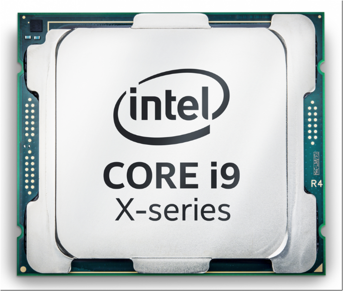

A brincadeira de processadores ficou bem séria neste ano. Depois do rebuliço causado pela AMD com seus chips Ryzen e também com o anúncio dos modelos Threadripper, a Intel resolveu arregaçar as mangas e soltar algumas surpresas para dar o troco. Anunciada durante a Computex 2017, exatamente um ano após a chegada do processador Intel Core i7-6950X, a linha Core i9 vem para mostrar que a fabricante continua em um avanço frenético para entregar mais desempenho e tecnologia ao consumidor. O Intel Core i9-7900X é o modelo de entrada dessa nova série, sendo que ele roubou a atenção com números absurdos, mas um tanto tímidos se comparados ao seu antecessor. Apesar de haver algumas dúvidas sobre o real poder do produto, esse novo dispositivo se destacou entre os tantos anúncios recentes, principalmente por ser um chip voltado para o mercado de desktops. Pertencente à família Skylake-X, o i9-7900X vem para repaginar a série Extreme, que ganha uma série de novos membros. Esse processador é fabricado com litografia de 14 nanômetros, vem com dez núcleos (o que significa que ele pode executar 20 threads simultaneamente) que rodam na frequência de 3,3 GHz e têm TDP de apenas 140 watts. É claro que esse não é um grande avanço se pensarmos no componente do ano passado, que tinha especificações muito similares. Contudo, há promessas de que ele seja significativamente superior ao i7-6950X e entregue boa competição com o Ryzen 7 e os futuros Threadripper. Vale considerar que essa novidade chega com novo soquete e outros pormenores, sendo preciso debater essas questões detalhadamente. No geral, o Intel Core i9-7900X é focado em tarefas que usam múltiplos núcleos. Agora, fica a dúvida: ele vale a pena para o consumidor que quer jogar ou realizar tarefas em casa? Como de costume, nós passamos alguns dias rodando vários testes, incluindo benchmarks e jogos recentes.
